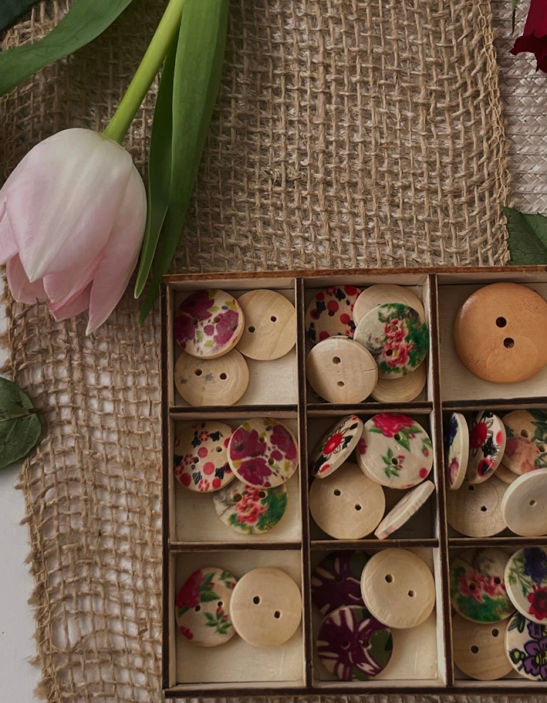

Indywidualne spotkanie skupione na codziennych czynnościach, pracy dłoni i samodzielności.
Zamiast typowej zabawy czy spędzania czasu proponujemy proste aktywności, które można dopasować do możliwości i zainteresowań danej osoby.
Rysowanie szlaczków, kolorowanie, nawlekanie, przekładanie drobnych elementów, układanie, lepienie, zapinanie guzików czy ćwiczenie chwytu mogą stać się naturalną częścią wspólnie spędzonego czasu.
Aktywności są dobierane tak, aby angażować dłonie, palce, koordynację i koncentrację, a jednocześnie pozostawać przyjemne i nieskomplikowane.
W przypadku osób starszych mogą nawiązywać do czynności, które są częścią codzienności – sztućców, kubka, długopisu czy wykonywania prostych prac manualnych. W przypadku dzieci mogą przyjmować formę kreatywnej zabawy, rysowania, układania czy tworzenia.
Każde spotkanie odbywa się we własnym tempie, z uwzględnieniem aktualnych możliwości i preferencji uczestnika.
DOTKNIJ - ĆWICZ - ODKRYWAJ SAMODZIELNOŚĆ
